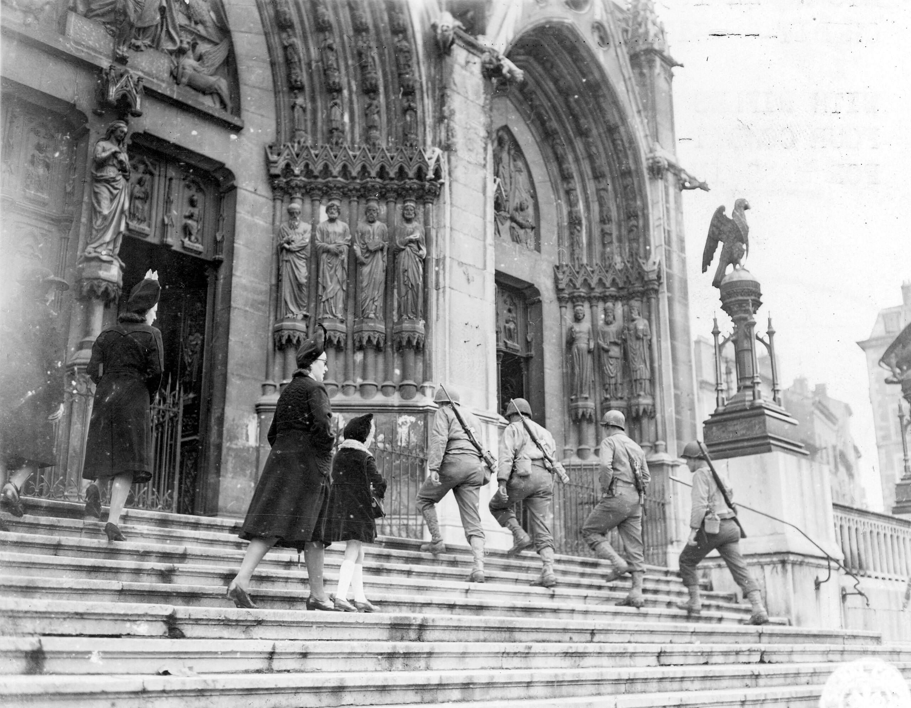
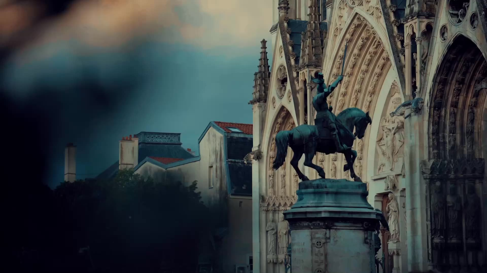

Basilique Saint-EpvreDix siècles d'histoire · Duché de Lorraine · De la paroisse médiévale à la basilique néo-gothique
Trois églises se sont succédé sur la place Saint-Epvre. La première naît avec la paroisse au XIe siècle, la deuxième s'élève en gothique flamboyant au temps des ducs de Lorraine, la troisième est la basilique que l'on connaît, voulue par un curé courageux et financée par les souverains de toute l'Europe.
Au cœur de la cité naissante, la plus ancienne paroisse de Nancy.
Le duc de Lorraine établit une église paroissiale dédiée à saint Epvre, évêque de Toul au début du VIe siècle. Ses reliques reposent aujourd'hui dans le maître-autel. Jusqu'à la fin du XIXe siècle, on dit parfois « Saint-Épure ».
Entre 1436 et 1451, l'église est entièrement reconstruite. Son clocher, point le plus haut de la ville médiévale, sert aussi de tour de guet au-dessus des remparts.
René II, duc de Lorraine, défait Charles le Téméraire sous les murs de la ville. Sa statue équestre, œuvre de Mathias Schiff, domine depuis les années 1880 la fontaine de la place, face à la basilique.

La troisième église de la place, et la plus haute.
Flèche de 87 mètres
Treize ans pour élever une cathédrale néo-gothique au cœur de la Ville-Vieille.
La ville ouvre un concours pour une nouvelle église. Le projet de Léopold Gigout remporte la médaille d'or, mais le conseil municipal confie finalement le chantier à Prosper Morey, l'architecte qu'appuie le maire Henri Buquet.
Le projet est approuvé le 19 avril et Morey expose ses plans au Salon. L'église du XVe siècle est démolie et les fondations creusées dans l'année.
En mai 1864, la première pierre de la nouvelle église est posée.
Joseph Trouillet, futur Monseigneur, lance une collecte qui touchera les plus grandes cours d'Europe. Napoléon III et l'impératrice Eugénie offrent des vitraux ; Pie IX envoie 25 m² de dallage antique de la via Appia.
Le 22 octobre, François-Joseph Ier d'Autriche, descendant des ducs de Lorraine, visite le chantier. Il offre le grand escalier du parvis et un vitrail. La même année, l'orgue de Joseph Merklin reçoit une médaille d'or à l'Exposition universelle de Paris.
Les ateliers viennois de Carl Geyling posent 82 verrières ; le maître verrier lorrain Maréchal en ajoute deux.
Mgr Joseph-Alfred Foulon, évêque de Nancy, consacre l'église. Le maître-autel est l'œuvre du sculpteur alsacien Théophile Klem.
Le 26 novembre, le pape Pie IX élève Saint-Epvre au rang de basilique. Les travaux s'achèvent l'année suivante.
Bombardements, tempête, restaurations : la basilique traverse le siècle.
Dans la nuit du 25 au 26 septembre, un dirigeable allemand bombarde la Ville-Vieille. La toiture est touchée et près de la moitié des vitraux est détruite ; Jacques Gruber, maître de l'École de Nancy, dirige leur reconstitution.
Mgr Trouillet fait poser dans la basilique une plaque à la mémoire de Prosper Morey.
La paroisse est confiée à la congrégation de l'Oratoire de saint Philippe Néri.
La basilique est inscrite aux monuments historiques. En décembre, la tempête l'endommage ; avec la pollution, elle rend nécessaire une vaste campagne de restauration. L'orgue avait été restauré en 1992, l'orgue de chœur le sera en 2009.
Le 15 décembre, une relique du bienheureux Charles Ier de Habsbourg-Lorraine est transférée dans la basilique, un siècle et demi après la visite de François-Joseph.